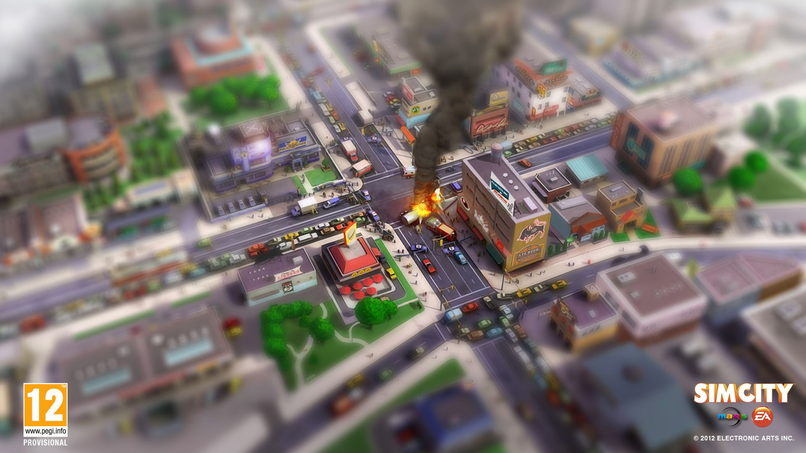
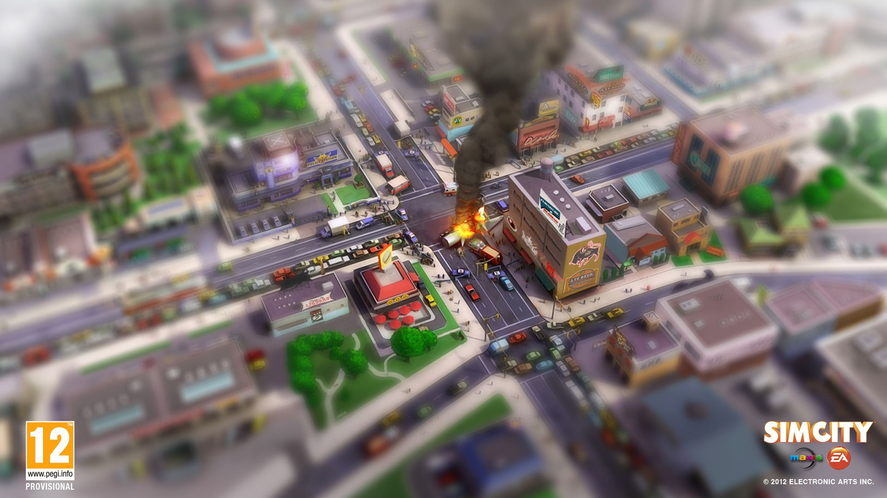
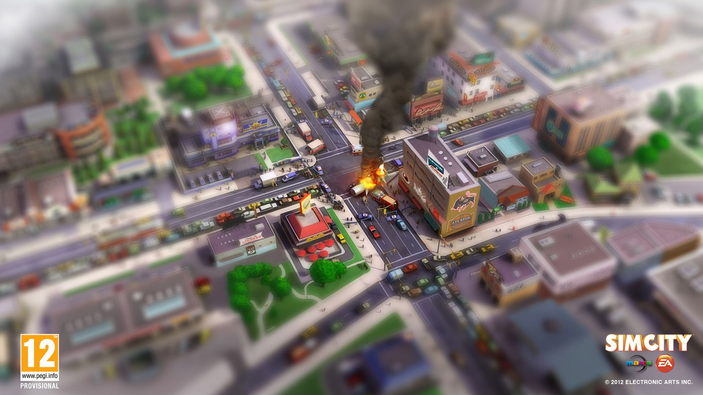

SimCity Build It
Game Trailer
Game Discription
The player (acting as mayor) is given a blank map to begin and must expand the city with the budget provided. As the city matures, the player may get to place government and other special buildings (such as a mayor's house or courthouse), depending on how large the city is. The player must supply the citizens services, which include health, education, safety, parks and leisure. These come in the form of different buildings, where each building covers a circular "range" of service. Inadequate funding of these services can lead to strikes. Cities must also provide basic utilities, namely electricity, water and (in SimCity 3000 and SimCity 4) waste management. The primary source of income is taxation, which can be altered by one percent increments in all versions up to SimCity 3000, and by tenths of a percent in SimCity 4. Legalizing gambling and placing certain "special" buildings (such as military bases or federal prisons) can generate income as well. The player may also make deals with neighbouring cities to sell or buy services, as long as a connection is made to the neighbor for that service (this feature was introduced in SimCity 3000). SimCity is predominantly a single-player game (the exceptions being a "Network Edition" of SimCity 2000, and a Unix port of the original SimCity).[2] SimCity 4 also provides a form of multiplayer gaming with the ability to share regional maps and cities with other players, allowing players to collaborate, but not to interact in real time gameplay.
Game System Requirements
Minimum:Download Links